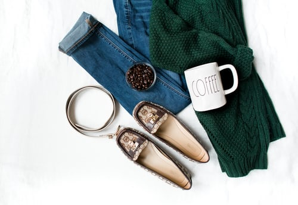
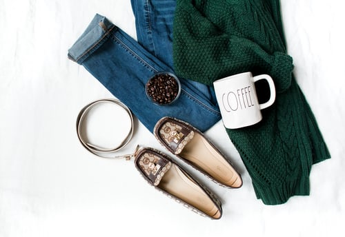
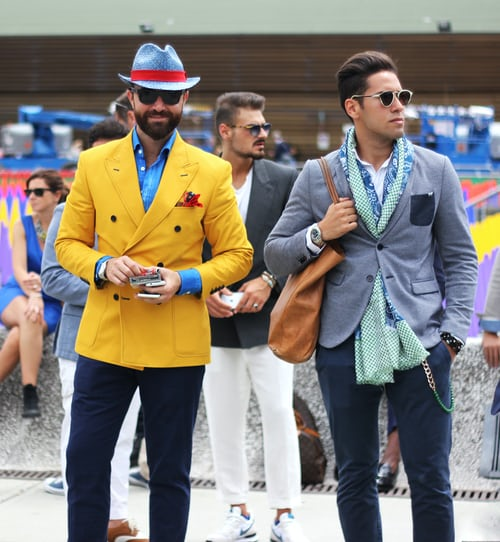
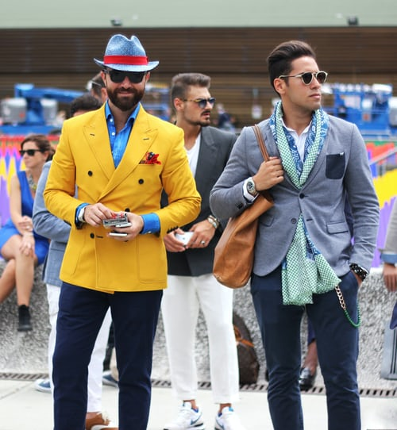
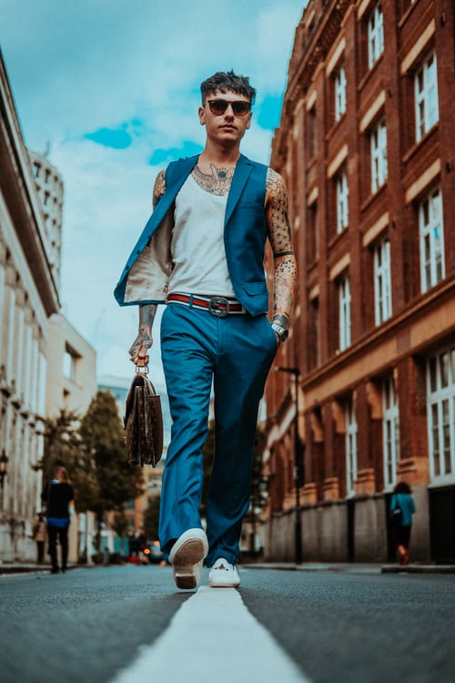
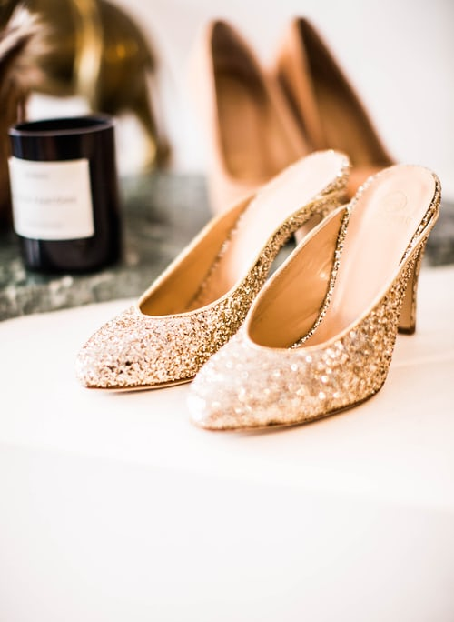
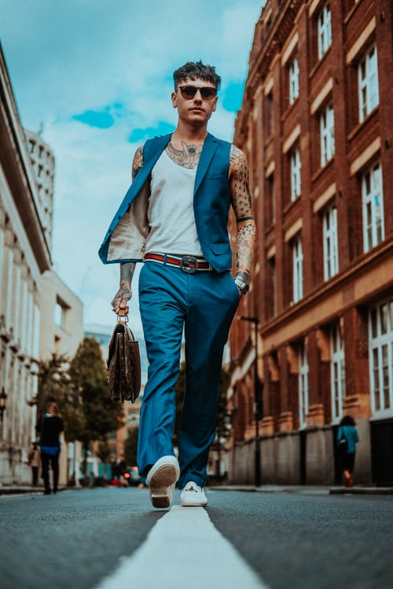
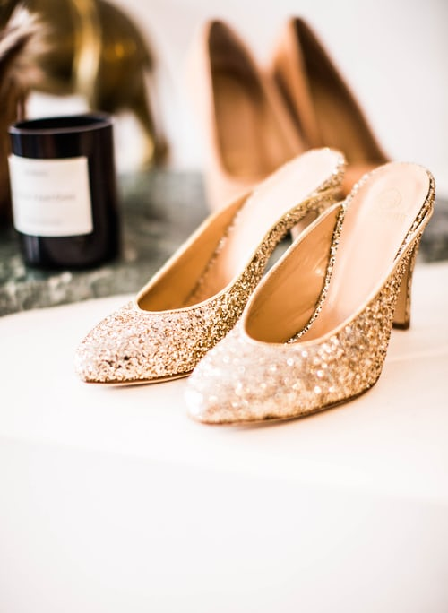

ISA WEARS blogs

 

 


NYFW can be both amazingly fun & incredibly overwhelming, especially if you've never been. Luckily, I'm here to give you an insider's guide and make your first show a pleasurable experience. By taking my tips and tricks, and following your gut, you'll have an unforgettable experience
 



Always be true to your own sense of style, if you don't you'll be uncomfortable the whole time and it will show. Remember, NYFW is about expressing yourself and taking in what the designers have chosen to express through their new lines. Also it's important to wear shoes you'll be comfortable in all day. Obviously you want to look good, but you'll be on your feet all day long, so be prepared.